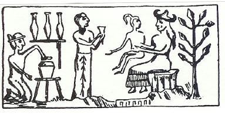
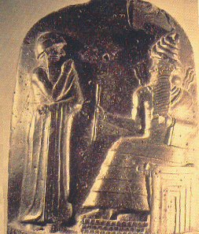

"We shall destroy God" - quote from the Protocols of the Learned Elders of Zion.
The Hebrew written "Five Books of Moses" also known as the "Pentateuch", along with the "Torah" were STOLEN and CORRUPTED from the Egyptian "TAROT." Note- "Torah" is an anagram of "Tarot." The most noted example of the Tarot is the 78 card pack sold in many stores now-a-days and used for fortune telling. The Tarot consists of five suits [where the five was stolen and corrupted from]: the wands/rods of fire, the swords of air, the cups of water, the pentacles of earth, and the trump of quintessence/ether. The trump suit was omitted from the standard deck of playing cards, and all that remains of the trump is the Fool card, which was kept as the Joker. All of these are elements [fire, earth, air, water and ether] of the human soul and the message of the Tarot aside from its divination capabilities is the Magnum Opus, which leads to physical and spiritual perfection and immortality. All of this was stolen and corrupted into a fictitious history of the Jews, which has nothing whatsoever to do with spirituality.
The Jewish Talmud instructs the Jewish people to destroy Gentiles and enslave them, as "YHVH" in reality is the Jewish people.
Quote from the Talmud: The fictitious Jewish "God" "Yaweh/Jehova's" name was inserted, replacing the names of many Gentile/Pagan Gods. The entity "Jehova" is fictitious. The name "Jehova" was stolen from the Roman God "Jove" for one.
Humanity's original religion was polytheistic [having many different Gods]. In the original Hebrew Bible, the word "Elohim" is used. "In spite of the monotheistic endeavors of the compilers and editors of the book of Genesis, struggling to proclaim faith in a sole deity in a world that in those days believed in many gods, there remain numerous slip-ups where the biblical narrative speaks of gods in the plural. The very term for 'deity,' [when the Lord is not specifically named as Yaweh], is not the singular El but the plural Elohim. 2
The dual aspect of Christianity was stolen from the duality of Zoroastrianism, which preceded the Christian religion by centuries. 3 Yaweh/Jehova replaced Ahura Mazda, and the Old Gods who were the Original Gods [Ahriman, which is Aryan and means "noble" in Sanskrit] were labeled as "evil" in order to establish the supreme monotheism of Yaweh/Jehova. The Original Gods were turned into Demons and monsters which represented evil.4 Most wound up in the "Goetia." Note the similarity of the root "Goet" meaning "Devil" and the derogatory Jewish word for Gentile, which is "Goy" or plural, "Goyim."
This excerpt quote from the Catholic Encyclopedia is very revealing:
Mithra, the celestial intermediary between Ahura Mazda and Angra Manyu [Ahriman], has numerous striking parallels with the Nazarene "Jesus Christ." Mithra was a savior, who like the Nazarene was announced by prophets, whose birth took place in a cave [many accounts of the birth of the Nazarene claim that he also was born in a cave], and the appearance of an exceptional star. Mithra would later supplant Vishnu, who in pre-Zoroastrianism Vedism had been the world's savior.5 The following is proof of the many different and diverse sources of which the authors of the Judeo/Christian Bible stole from:
Both of these creation accounts predate Christianity and the Judeo/Christian Bible by centuries. Both reveal there were "GODS" not "One God."
Genesis Chapter 1, verse 26 reads: "And God said "let us make man in our image, after our likeness...."

Below is a photo of the basalt stele showing the Sumerian Sun God Shamash giving Hammurabi the tablet listing the laws. "Shamash" is also known as "Azazel," the leader of the so-called "Fallen Angels," the "Igigi" Nordic extra-terrestrials who took human wives.

Example:
Exodus 20:
Also, most of what was written in the biblical books of Exodus, Leviticus and Deuteronomy was taken from the above- NOT from "Yaweh." There are xians who are stupid enough to believe their "Yaweh" is the only god. "No Gods before me."
MORE STOLEN:
Many of the writings in the biblical book of Joshua were stolen from:
More stolen writings in the biblical book of Judges:
The biblical books of Samuel and Kings also contain much stolen material from:
More stolen material in the biblical books of Ezra and Nehemiah from:
More stolen stories and writings in the biblical books of Job and Ecclesiastes:
As we can see from the above, the Christian "religion" is based upon stolen material that has been twisted, warped and distorted to manipulate, confuse and incite fear into humanity. It has taken the ORIGINAL GOD AND CREATOR OF HUMANITY EA/ENKI aka SATAN/LUCIFER and turned him into an assumed enemy of humanity. "We shall destroy God" -- The Protocols of the Learned Elders of Zion. Christianity has been used to blaspheme, ridicule and malign the Old Gods, create estrangement and enmity from legitimate dieties of which it replaced with the false god "Yaweh/Jehova." In addition, this monstrous program is used as a tool to create a defenseless mentality; that of a slave, to psychologically disarm the Gentile populace into accepting communism, another Jewish brotherhood program.
It is often said that the true evil cannot create anything. Everything of the true evil is artificial. In truth, "God" and the "Devil" are backwards.
This foul religion's entire foundation is composed of stolen material. In addition, it is anti-life and suicidal. There is nothing at all spiritual about it. The purpose of all of this is to completely cut humanity off from the true Creator God who is Satan. In doing so, the reptilian aliens and those who are working for them will achieve the goal of enslaving the human race through the Jewish program of communism. Satan gives us knowledge and power. Without him, humanity has nothing. The true evil is also known as the master of lies and deception. What greater deception is there for followers of these religious scams to curse and blaspheme their own Creator? Many of the ancient Pagan religions such as the Greeks and the Romans shared legends and pantheons. This is entirely different from Christianity, that has worked relentlessly and brutally to destroy any and all other religions, claiming it to be the only true one.
"IN THE SECRET OF MY KNOWLEDGE THERE IS NO GOD BUT ME"
Most Christians and many others believe the Judeo/Christian Bible to be the word of "God." In truth, nearly everything within the Bible was stolen and corrupted from Pagan religions that predated Judeo/Christianity from hundreds to thousands of years, from all around the world, and in particular, the Far East.
Sanhedrin 58b. If a heathen [Gentile] hits a Jew, the Gentile must be killed. Hitting a Jew is the same as hitting God.
"The pious Dr. Parkhurst. . . proves, from the authority of Diodorus Siculus, Varro, St. Augustine, etc., that the Iao, Jehova, or ieue, or ie of the Jews was the Jove of the Latins and Etruscans..." "YHWH/IEUE was additionally the Egyptian Sun God Ra: Ra was the father in heaven, who has the title of 'Huhi' the eternal, from which the Hebrews derived the name 'Ihuh.'" "Jewish mystical tradition viewed the original Jehova as an androgyne, his/her name compounded as Jah [jod] and the pre-hebraic name of Eve, Havah, or Hawah, rendered he-vau-he in Hebrew letters. The four letters together made the sacred Tetragrammaton, YHWH, the secret name of God..." We can also see where the antagonistic story of Zeus [Jove] and Prometheus was used to promote the concept of a rebellious God who was condemned and ostracized for bringing knowledge to humanity." 1
In the same way the Greeks and Romans may have worshipped their divinities, fondly believing them to be good. But the Christian Scriptures declare that all the gods of the Gentiles are demons.
Catholic Encyclopedia: Devil Worship
https://www.newadvent.org/cathen/04767a.htm
DEMONS ARE THE GODS OF THE GENTILES!!!!
The Enuma Elish predated the bible by a minimum of 1,000 years, and is presumed to be much older. The tablets are now in the British Museum.
This right here debunks the Jewish monotheistic Yaweh myth.
The extra-terrestrial God, known as Ea [Satan] created human beings through genetic engineering, and several other Gods/Goddesses were involved in the creation. See the image of the Sumerian Creation below. This was originally carved in rock, thousands of years old; predating Judeo/Christianity.
The Flood Story from Gilgamesh predates the Christian account by well over 1,000 years or more.
The Judeo/Christian Bible claims that "Yaweh" incited the flood. In truth, "Enlil" allowed the flood to take place. Tracing Enlil's origins here on earth, we have found he is also known as "Bel" which evolved into the name "Baal" and eventually "Beelzebub" who was God of the Philistines.
The "Flood" is another ancient ALLEGORY that was STOLEN and corrupted from the original Pagan religions and has to do with the flood of energy during the working of the Magnum Opus, after which there are visions of colors indicating an important stage has passed. The allegory of the colors is where the Jewish scriptwriters got the "rainbow" and "Jacob's coat of colors" [the aura]. Allegories and CONCEPTS were STOLEN and corrupted into unsavory Jewish characters for Gentiles to slavishly worship. Sacred religious teachings intended for humanity to evolve spiritually were desecrated and replaced with Jewish literary trash. These FICTITIOUS Jewish characters have NOTHING whatsoever to do with spirituality or advancing one's soul.
EA warned "ZIUSUDRA" aka "UTNAPISHTIM," not "Noah" about the impending flood and
instructed him on building an ark. The legend is Sumerian and Akkadian/Babylonian in origin. The "Atrahasis Epic" is the Akkadian/Babylonian account of the Great Flood.
AGAIN, more than one God is involved. Also, the Gods departed from the Earth during the flood. Note "GODS."
The Bible claims that "Yaweh" confused the languages of the people's constructing the Tower of Babel. This is not so. AGAIN, the Jewish authors of the Judeo/Christian Bible screw up and evidence of more than one God is plain to see:
Genesis Chapter 11; verse 7:
"Let us go down and there confound their language that they may not understand one another's speech."
AGAIN, more than one God is involved. Note the "us."
The "Tower of Babel" is another ALLEGORY. In ancient times, humans could communicate telepathically, without words. This was taken from us, but is now becoming a reality again as many of us are experiencing this through the opening of the mind and soul through power meditation.
Many of the Old Testament laws, along with the Ten Commandments were stolen from:
The Code of Hammurabi
16 Thou shalt not bear false witness against thy neighbour.
Stolen from the Code of Hammurabi, 3: "If a seignior came forward with false testimony in a case, and has not proved the word which he spoke, if that case was a case involving a life, that seignior shall be put to death."
More stolen from the Code of Hammurabi:
Exodus 21:24 Eye for eye, tooth for tooth, hand for hand, foot for foot,
Hammurabi 196: "If a seignior has destroyed the eye of a member of the aristocracy, they shall destroy his eye."
Hammurabi 200: "if a seignior has knocked out a tooth of a seignior of his own rank, they shall knock out his tooth."
The Ur-Nammu Code is the oldest Ancient Near Eastern law code recovered by archeologists. The Sumerian Code from 1800 BCE belongs to this oldest enduring legal tradition.
While Hittite law was similar in many ways to the Hammurabi law codes the “Hittite Code” containing two hundred paragraphs of regulations demonstrates a tolerance for sexual immorality with a strong emphasis upon financial concerns. The Hittites cultivated barley and wheat, brewed a barley beer. Silver pieces were circulated as currency.
Ahiqar was an advisor to Sennacherib, king of
Assyria from 704-681 BCE. In 1906 German archaeologists
excavated a copy of his teachings, inscribed upon eleven sheets of palimpsest papyrus, from the debris of Elephantine which is today part of the city of
Aswan in Southern Egypt.
Parallels:
Whoso curseth his father or his mother, his lamp shall be put out in obscure darkness. Prov.20:20
STOLEN from:
"Whosoever takes no pride in the names of his father and mother, may the sun not shine upon him." Ahiqar 9:137
He who spares the rod hates his son, but he who loves him
is careful to discipline him;
Prov. 13:24
STOLEN from:
"With-hold not thy son from the rod, else thou wilt not be able to save him from wickedness." Ahiqar 6:81
Through patience a ruler can be persuaded, and a gentle
tongue can break a bone.
Prov. 25:15
STOLEN from:
Soft is the utterance of a king; yet it is sharper and stronger than a two-edged knife." Ahiqar 7:105
Amen-em-opet, son of Ka-nakht, taught in Egypt between 1200 - 1000 BCE. The text is found in British Museum Papyrus 10474 and a portion on a writing tablet in Turin, Italy. The papyrus is said to have come from Thebes and is speculated to be of the 10th and 6th centuries BCE.
Parallels:
Pay attention and listen to the sayings of the wise; apply
your heart to what I teach, for it is pleasing when you keep
them in your heart and have all of them ready on your lips.
Prov. 17-18
STOLEN from:
Give they ears, hear what is said,
Give they heart to understand them
Let them rest in the casket of thy belly
That they may be a key in they heart."
Amen-em-opet 3:10
Do not exploit the poor because they are poor and do not
crush the needy in court.
Prov. 22:22
STOLEN from:
"Guard thyself against robbing the oppressed
And against overbearing the disabled."
Amen-em-opet 2:1
If your enemy is hungry, give him food to eat; if he is thirsty
give him water to drink. In doing this, you will heap burning
coals on his head and the Lord will reward you.
Prov. 25:21-22
STOLEN from:
"Leave him in the arms of the god;
Fill his belly with bread of thine
So that he may be sated and may be ashamed."
Amen-em-opet 5:8
Do not move and ancient boundry stone or encroach on
the fields of the fatherless, for their Defender is strong;
he will take up their case against you.
Prov. 23:10-11
STOLEN from:
"Do not carry off the landmark at the boundaries of the arable land
Nor disturb the position of the measuring cord
Be not greedy after a cubit of land
Nor encroach upon the boundaries of a widow."
Amen-em-opet 7:12-15
Better a little with the fear of the Lord than great wealth
with turmoil
Prov. 15:16
Better a little with righteousness than much gain with
injustice.
Prov. 16:8
STOLEN from:
Better is a measure that the god gives thee,
Than five thousand taken illegally."
Amen-em-opet 8:19
[This one also smacks of the Nazarene feeding the "five thousand."]
Better a meal of vegetables where there is love than a
fattened calf with hatred. Prov. 15:17
Better a dry crust with peace and quiet than a house full
of feasting, with strife. Prov. 17:1
STOLEN from:
"Better is bread when the heart is happy
Than riches with sorrow."
Amen-em-opet 9:9
Do not make friends with a hot-tempered man, do not
associate with one easily angered, or you may learn his
ways and get yourself ensnared, Prov. 22:24-25
STOLEN from:
"Do not greet thy heated in thy violence
Nor hurt thy own heart thereby"
Amen-em-opet 13:8
You will vomit up the little you have eaten and will have
wasted your compliments.
Prov. 23:8
STOLEN from:
"The mouthful of bread too great thou swallowest and vomitest up."
Amen-em-opet 14:13
Do not boast about tomorrow, for you do not know what a
day may bring forth.
Prov. 27:1
STOLEN from:
"Do not spend the night fearful of the morrow
At daybreak what is the morrow like?
Man knows not what the morrow is like."
Amen-eo-opet 19:11
Many are the plans in a man’s heart, but it is the Lord’s
purpose that prevails. Prov. 19:21
In his heart a man plans his course, but the Lord determines
his steps.
Prov. 16:9
STOLEN from:
"One thing are the words which men say
Another is that which God does."
Amen-em-opet 19:15
Have I not written thirty sayings for you, sayings of
counsel and knowledge.
Prov. 22:20
STOLEN from:
"See thou these thirty chapters
They entertain; they instruct
They are the foremost of all books."
Amen-em-opet 27:5
Ptah-Hotep taught around 2450 BCE, during the 5th Dynasty of The Old Kingdom of Egypt. His teachings were preserved on both clay tablets and papyrus sheets and are presently at the Bibliothéque Nationale in Paris. In addition to the book of Proverbs, many of the writings in the books of Ecclesiastes and Sirach were also stolen from the Teachings of Ptah-Hotep.
The Egyptian Love Songs are 1,000+ years older than those in the Song of Solomon. The parallels are unmistakable. The Papyrus Harris 500 was discovered at Thebes in the Ramesseum Complex in the Karnak Temple.
Both the biblical books of "Kings" and "Daniel" echo the scenario of entertaining a king along with the prediction of his downfall. The theme of the slave who would be king is repeated in "The Story of Hagar [Genesis chapters 16 and 21]. The Visions of Nefertiti dates back to the reign of the Pharaoh Snefru [2680- 2565 BCE]. He calls for Nefertiti to entertain him. Nefertiti predicts the downfall of the Old Kingdom and the establishment of a new Dynasty by Amen-em-het I [1991- 1786 BCE].
1. The secrecy factor surrounding the birth
2. The placing in a reed basket, covered with bitumen
3. The setting in a river
4. The recovery and adoption
The Hymn to the Aton can be found in the Tomb of Eye. 1365- 1348 BCE.
Inscribed upon six clay tablets, in the Ugaritic Language; cuneiform script. Circa 1400 BCE.
Here is the original story of Job, written in the Ugaritic language [Cuneiform Script], composed circa 1400 BCE by "Ilimilku The Scribe." This epic involves "Keret" and the God "El." NOT Job and jehova. Keret's family tradgedies and illness are comparable with the story of Job. In the original tale, "Satan" never even entered into the picture.
-SATAN
From "Peace Be Unto Him"
1 The Christ Conspiracy, The Greatest Story Ever Sold by Acharya S pages 94-95
2 The Stairway to Heaven by Zecharia Sitchin, page 99.
3 World Book Encyclopedia article on Zoroastrianism, © 1989
4 A History of the Devil by Gerald Messadié
5 Cambridge illustrated History of Religions, edited by John Bowker. Pages 216- 217
6 Mesopotamia by Pamela F. Service, page 44.
Other References:
The Holy Bible- King James Version
The Ancient Near East, Volume I, edited by James B. Pritchard © 1958
Old Testament Parallels: Laws and Stories From the Ancient Near East by Victor H. Matthews and Don C. Benjamin© 1991
A History of the Devil by Gerald Messadié© 1993, 1996
Encyclopedia Britannica